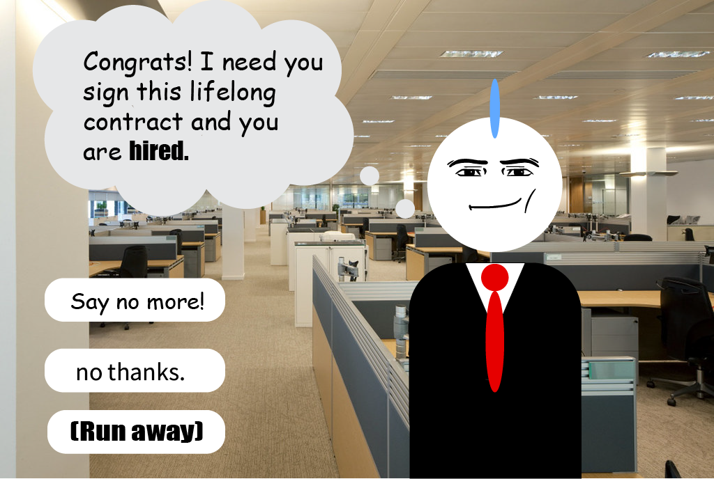

<map name="image-map">
    <area target="_top" alt="ending2" title="ending2" href="night.gif" coords="74,408,315,454" shape="rect">
    <area target="_top" alt="Leave Office" title="Leave Office" href="out1.html" coords="71,509,317,556" shape="rect">
    <area target="_top" alt="RUNAWAYY" title="RUNAWAYY" href="out1.html" coords="75,600,317,645" shape="rect">
</map>
